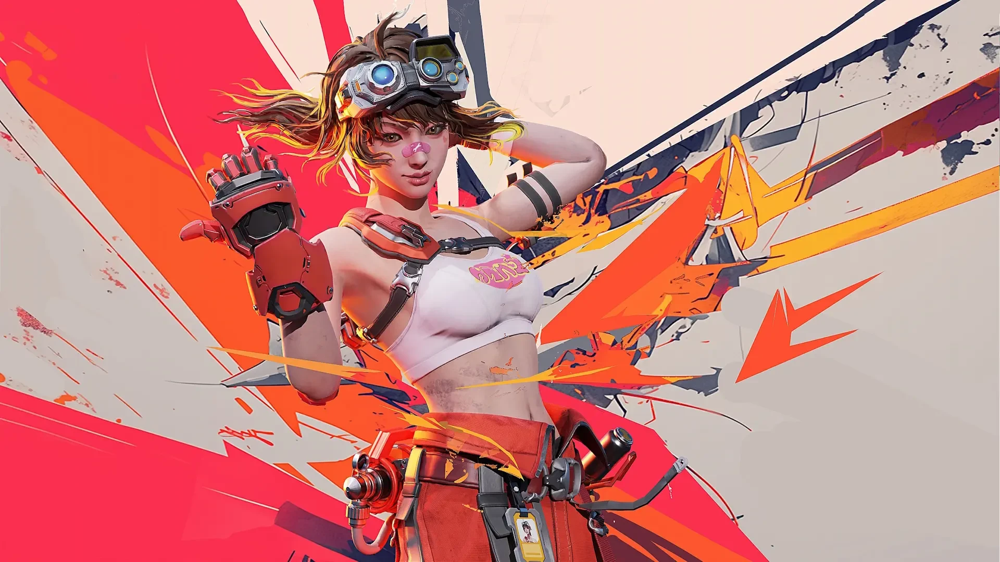
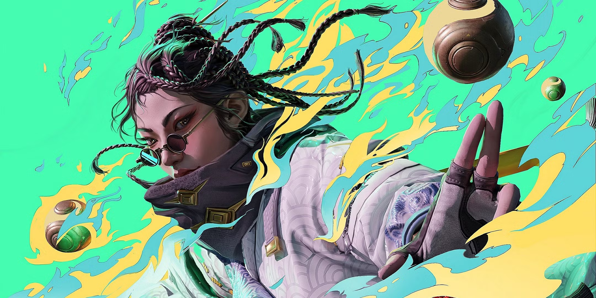

Xuất hiện tựa game mới là đối thủ nặng ký của CS:GO và Valorant, lượng người chơi tăng vọt trên Steam
Tựa game này hiện đang tạo ra không ít những ý kiến trái chiều.
Được giới thiệu tại Summer Game Fest vừa qua, FragPunk đã không mất quá nhiều thời gian để làm say đắm các game thủ nhờ phong cách chơi độc đáo của mình.
Pha trộn phong cách bắn súng chiến thuật lấy cảm hứng từ Valorant với cơ chế nâng cấp ngẫu nhiên theo từng vòng đấu như trong Slay the Spire, trò chơi mang đến một làn gió mới cho dòng FPS truyền thống.

Kể từ khi ra mắt vào 6/3 vừa qua, FragPunk nhanh chóng đạt được con số người chơi ấn tượng trên Steam. Tuy nhiên, sự xuất hiện của tới 9 loại tiền tệ trong game cùng hệ thống mua vật phẩm tốn kém đã khiến cộng đồng không khỏi bức xúc.
Mặc dù FragPunk sở hữu lối chơi hấp dẫn và sáng tạo, điểm trừ lớn nhất của game lại nằm ở hệ thống giao dịch. Bất chấp việc vẫn duy trì được số lượng game thủ đăng nhập ấn tượng, có thời điểm lên tới hơn 50.000 người chơi đồng thời, thế nhưng tựa game vẫn chỉ đạt mức đánh giá 67% trên Steam, rơi vào mức trái chiều. Tất cả chỉ vì những giao dịch vi mô, hút máu quá tinh vi từ phía NPH game.
Cụ thể, FragPunk cung cấp 9 loại tiền tệ trong game, hai gói Battle Pass (Premium và Ultra)m hai gói đăng ký thành viên (tháng và năm) – cho phép mở khóa nhân vật và trang phục đặc biệt. Ngoài ra, khi ra mắt, game chỉ có 5 nhân vật (Lancers) có sẵn, còn lại người chơi phải mở khóa thông qua quá trình cày cuốc gian nan. Theo một số đánh giá, mất khoảng 35 giờ chơi mới có thể mở khóa được một nhân vật, với chi phí lên đến 18.888 Vàng hoặc 488 FragPunk Coins (đơn vị tiền tệ mua bằng tiền thật).
Phản ứng của cộng đồng game thủ đa phần là thất vọng. Nhiều ý kiến cho rằng FragPunk có lối chơi hay, nhưng hệ thống giao dịch quá tệ, mất hơn 100 trận mới mở được một nhân vật. Thậm chí, một số người còn gặp khó khăn trong việc tìm thấy nút bắt đầu trận đấu vì quảng cáo vật phẩm tràn ngập khắp nơi. Không chỉ vậy, nhiều người chơi còn phàn nàn rằng cảm giác di chuyển trong game chậm hơn so với bản beta, khiến trải nghiệm tổng thể bị ảnh hưởng đáng kể.